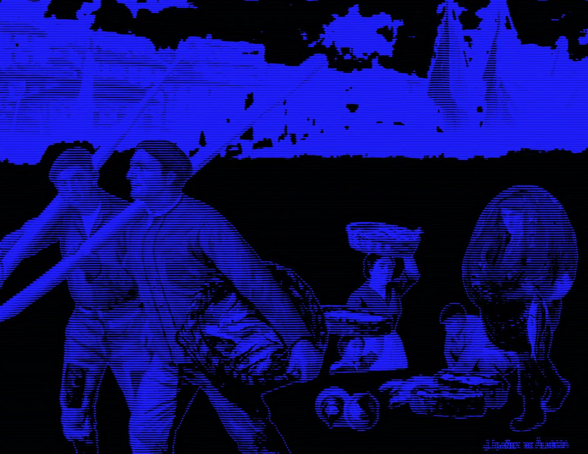
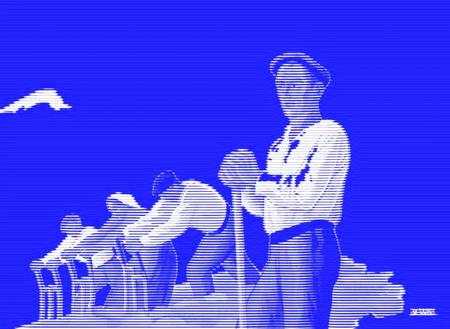
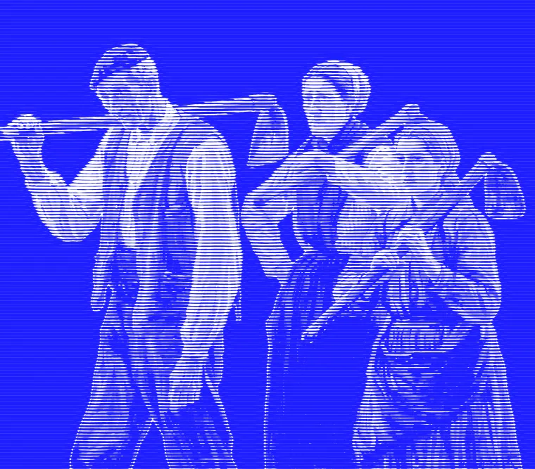
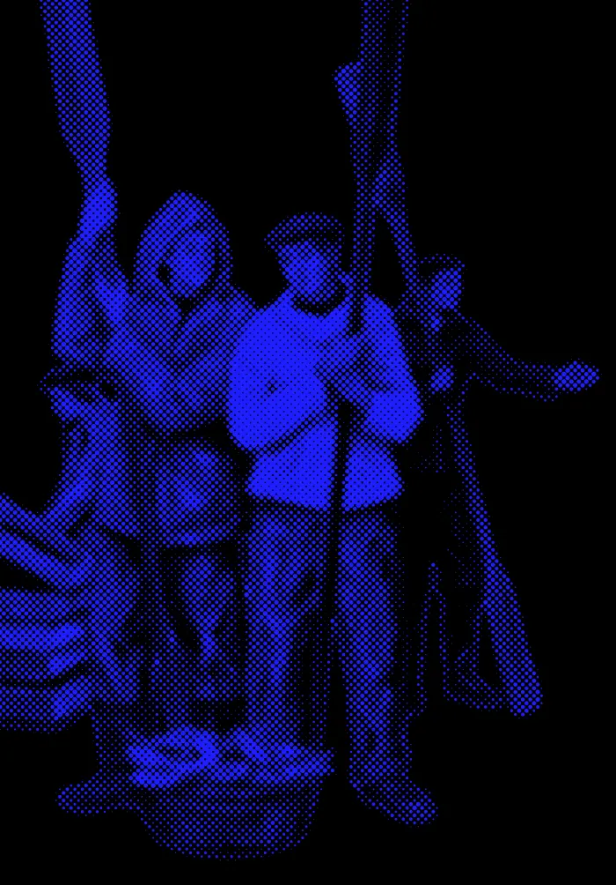

MODE 07
Line screen
Copper-plate lines that bend with tone. Exports straight to plotter SVG.

[ 03 ] Modes
Copper-plate lines that bend with tone. Exports straight to plotter SVG.

Sinusoidal phase shifts follow luminance, like a banknote portrait.

The classic error diffusion, with serpentine scan and custom palettes.

14 glyphs · Geist Mono · 8 px cells · cursor lens radius 120 px, lerp 0.14
[ 05 ] Export